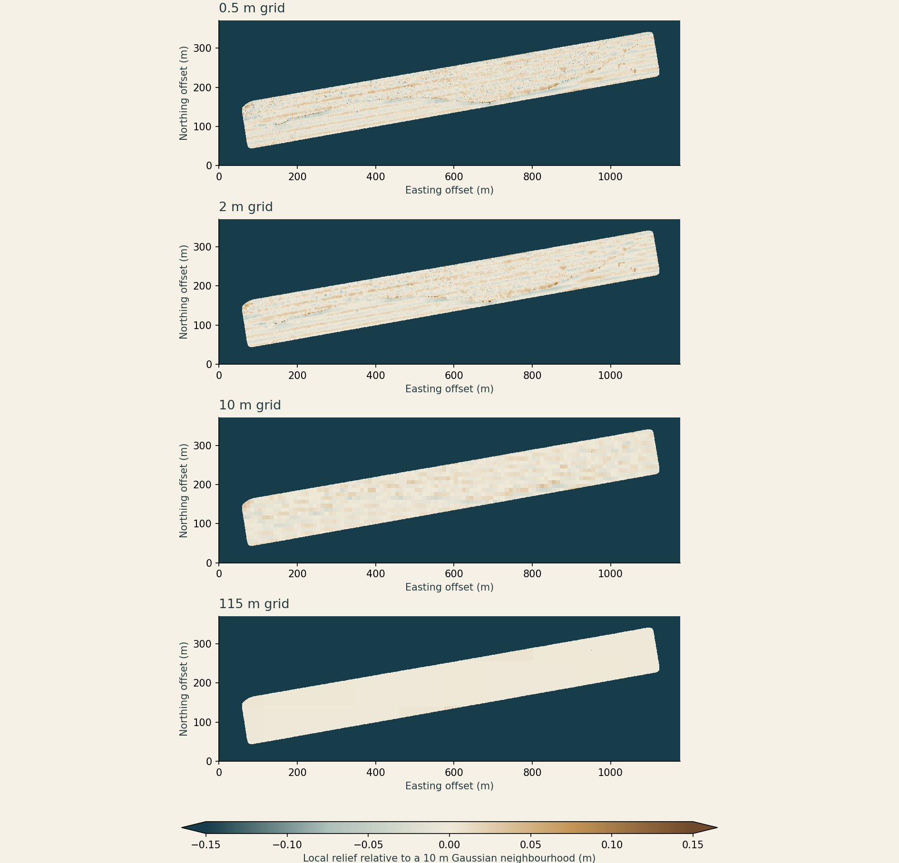

What a coarse
grid erases.
Can the data preserve a small feature before we ask AI to find it?
We downloaded the 0.5 m AUV survey of the Baltic stone alignment and averaged its measured cells at six resolutions. Small-scale relief fades while the average depth remains comparatively close.
This is a numerical resolution test. No AI detector, archaeological labels or new discovery are claimed. The published structure gives us a known site for developing a better benchmark.

Detail loss, measured.
| Grid spacing | Observed blocks | Local variance retained | Depth RMSE |
|---|---|---|---|
| 0.5 m | 663,281 | 100.00% | 0.00 cm |
| 2 m | 42,081 | 49.11% | 1.80 cm |
| 5 m | 6,900 | 33.17% | 2.14 cm |
| 10 m | 1,802 | 17.75% | 2.64 cm |
| 25 m | 322 | 4.57% | 4.15 cm |
| 115 m | 24 | 0.32% | 12.64 cm |
Depth RMSE measures disagreement with the original grid after averaging. It is not survey accuracy. Local variance includes noise and natural relief; it is not the percentage of a wall recovered.
Method, source and reproducibility
663,281 valid cells in a 2,355 × 742 raster. Means use observed cells only, including partial blocks, aligned at the upper-left corner. Missing cells never become zero depths.
For the detail diagnostic, subtract a normalised Gaussian mean (σ = 10 m) from the original depth, then average that fixed residual field. Compare variance at the same 502,232 well-supported source cells at every resolution. Plotted boundaries retain the original support mask.
The 115 m squares illustrate scale loss. They do not reproduce EMODnet’s angular grid, contributing surveys or interpolation. One site and one grid alignment do not establish a universal detection threshold.
Horizontal coordinates: WGS 84 / UTM zone 32N. The vertical datum was not resolved from the GeoTIFF metadata; this test uses within-survey differences, with no cross-dataset or ancient-shoreline inference.
J. Geersen, 2024 dataset · CC BY 4.0. AUV survey by DLR, Littorina L0123 (2023). Original archaeological study.
A useful next AI test.
Use independently labelled structure segments and difficult natural look-alikes from several surveys. Compare a model with simple relief and line-detection baselines. Hold out entire survey areas, score false alarms per surveyed area, and repeat at degraded resolutions.
The immediate gap is the benchmark: independently checked labels, geological controls and separate validation areas. Training and testing on neighbouring pixels of this one wall would overstate what the system learned.
SUBNORDICA is investigating AI methods for submerged Stone Age archaeology. A small, documented benchmark here could complement that work.